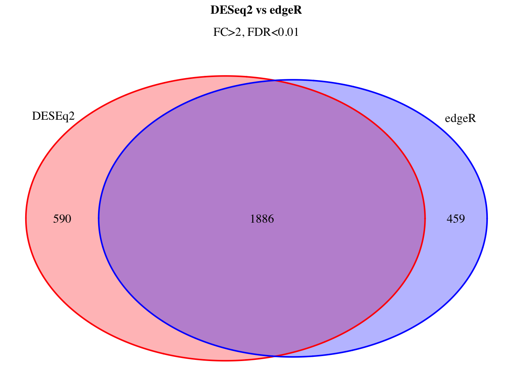
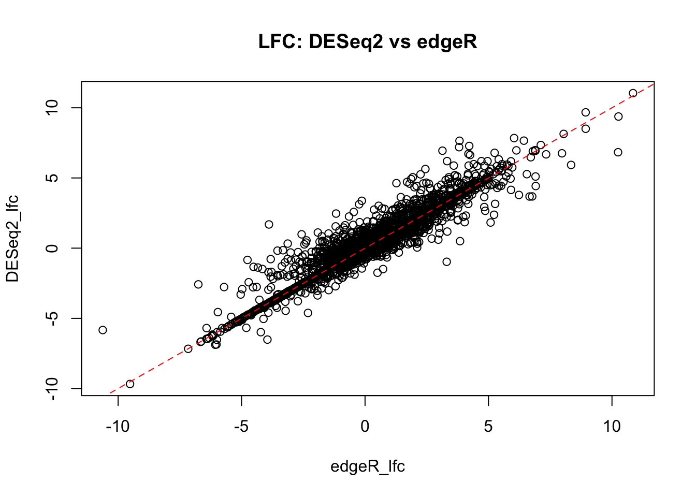
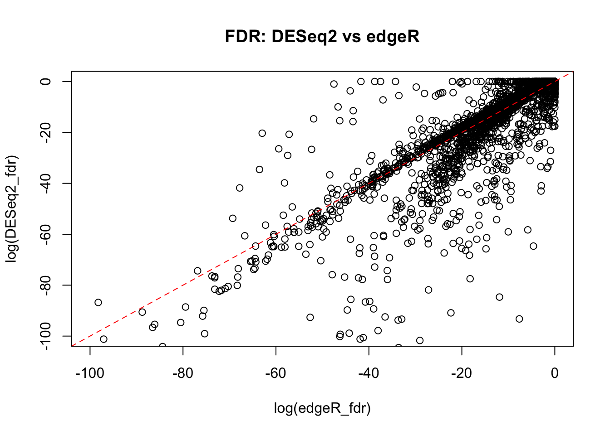

7 Compare DEG lists
In this section we will compare DEGs, sugested by DESeq2 and edgeR for at least 2 fold changes at FDR 0.01.
7.1 Venn diagram
Venn diagram allows a visual assessment of the lists overlap.
# Library for plotting Venn diagram
# install.packages("VennDiagram")
suppressWarnings(suppressMessages(library(VennDiagram)))
# Prepare data
venn_data <- list(DESEq2=DESeq2_fc_2_fdr_0.01_DEGs.df$gene_id,
edgeR=edgeR_fc2_fdr_0.01$table$gene_id)
# Make plot
# (use a real file name to direct the output into a file)
venn.plot <- venn.diagram( venn_data, filename = NULL,
main="DESeq2 vs edgeR",
main.fontface="bold",
sub="FC>2, FDR<0.01",
col=c("red","blue"),
fill=c("red","blue"),
alpha=0.3)
grid.newpage()
grid.draw(venn.plot)
grid.newpage()
# Clean-up
rm(venn_data, venn.plot)7.2 Compare FC and FDR estimates
The plots show a good agreement between fold-change estimates between DESeq2 and edgeR packages. The FDR estimates also show reasonable correlation. However, it could be noted that, overall, edgeR FDR estimates are more conservative for some genes in our dataset.
# Estimate the size of DESEq and edgeR data for all genes
dim(DESeq2_fc_2_fdr_0.01_all_genes.df)## [1] 28362 8dim(edgeR_fc2_all_genes$table)## [1] 24361 7# Merge DESEq and edgeR data for all genes
all_genes_intersect.df <- inner_join(DESeq2_fc_2_fdr_0.01_all_genes.df,
edgeR_fc2_all_genes$table,
by="gene_id")
# Check result
dim(all_genes_intersect.df)## [1] 24361 14colnames(all_genes_intersect.df)## [1] "baseMean" "log2FoldChange" "lfcSE" "stat" "pvalue" "padj" "gene_id" "gene_name.x" "gene_name.y" "logFC" "unshrunk.logFC" "logCPM" "PValue" "FDR"# Select columns
all_genes_intersect.df <- all_genes_intersect.df %>%
select(gene_name=gene_name.x,
gene_id,
DESeq2_lfc=log2FoldChange,
DESeq2_fdr=padj,
edgeR_lfc=logFC,
edgeR_fdr="FDR")
# Compare fold change
plot(DESeq2_lfc~edgeR_lfc,
data=all_genes_intersect.df,
main="LFC: DESeq2 vs edgeR")
abline(0,1, lty=2, col="red")
# Compare adjusted p (FDR)
plot(log(DESeq2_fdr)~log(edgeR_fdr),
data=all_genes_intersect.df,
xlim=c(-100,0),ylim=c(-100,0),
main="FDR: DESeq2 vs edgeR")
abline(0,1, lty=2, col="red")
# Save the intersect into a text file
write.table(all_genes_intersect.df,
file=file.path(base_folder,"analysis","results","all_genes_intersect.txt"),
quote=F, sep="\t", row.names = F)7.3 DEGs intersect list
It is reasonble to assume that the intersect between DEseq2 and edgeR (when using the same thresholds!) shows the most robust DEGs between ER-positive and Triple-negative breast cancer in the studied dataset.
Importantly, an external dataset is needed for an independent confirmation of the detected DEGs.
# Merge DESEq and edgeR data for DEGs
DEGs_intersect.df <- inner_join(DESeq2_fc_2_fdr_0.01_DEGs.df,
edgeR_fc2_fdr_0.01$table,
by="gene_id")
# Check result
dim(DEGs_intersect.df)## [1] 1886 11colnames(DEGs_intersect.df)## [1] "gene_name.x" "gene_id" "baseMean" "log2FoldChange" "padj" "gene_name.y" "logFC" "unshrunk.logFC" "logCPM" "PValue" "FDR"# Select columns
DEGs_intersect.df <- DEGs_intersect.df %>%
select(gene_name=gene_name.x,
gene_id,
DESeq2_lfc=log2FoldChange,
DESeq2_fdr=padj,
edgeR_lfc=logFC,
edgeR_fdr="FDR")
# Save the DEGs intersect into a text file
write.table(DEGs_intersect.df,
file=file.path(base_folder,"analysis","results","DEGs_intersect.txt"),
quote=F, sep="\t", row.names = F)